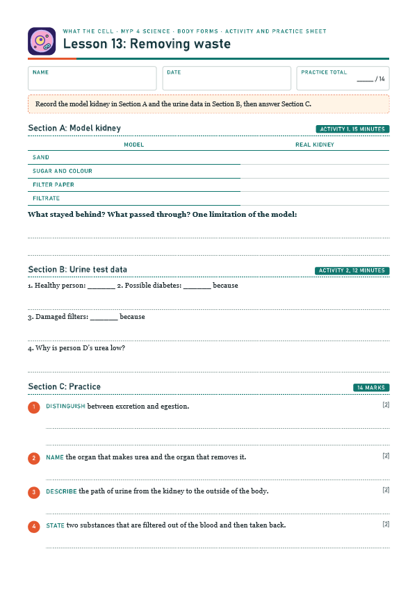

By the end of the lesson you can
- Distinguish between excretion and egestion
- Describe the urinary system and how a kidney filters blood
- Name the waste each excretory organ removes
- Evaluate dialysis and kidney transplants
Keys: arrows or a presentation clicker move the slides, F for full screen. Slides with a red dot have a video or simulation.
Videos (all 5 minutes or less)
- 2:46
The urinary system: an introduction
FuseSchool. While you watch: What are the main organs of the urinary system? Slide 11.
Simulations
- Lab
Print and practise

Activity and practice sheet
Used in the lesson’s activities, with practice questions. Your teacher has the answers.
Download (PDF)Lesson 13 slides
All 17 slides in one file, to read again or print. The video buttons on the slides open YouTube.
Download the slides (PDF)Revising? The Revision tab on the unit page has the unit notes and review.
Class activity pack
Everything to print for the lesson’s activities: picture cards, sorting mats, station cards with their kit lists, and the teacher’s set-up notes. Print it before class.
Download the activity pack (PDF)Notes: Removing waste
excretion
Removing waste made by cells. For example: urea in urine; CO2 from the lungs.
egestion
Removing undigested food as faeces. For example: not excretion.
urea
Waste made in the liver from extra amino acids. For example: removed in urine.
kidney
Organ that filters blood and makes urine. For example: you have two.
urine
Water, urea and salts removed by the kidneys. For example: stored in the bladder.
dialysis
A machine that filters the blood when kidneys fail. For example: three times a week.
Key words
| excretion | removing waste made by cells |
|---|---|
| egestion | removing undigested food |
| urea | waste from extra amino acids |
| nephron | a tiny filter in the kidney |
| ureter | tube from kidney to bladder |
| urethra | tube from bladder to outside |
| dialysis | machine filtering the blood |